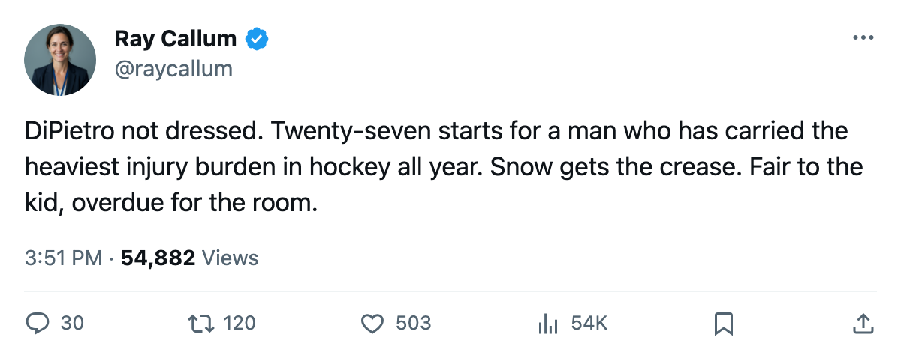
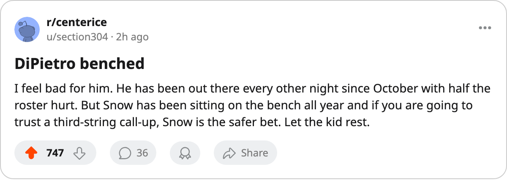

Goalie Watch: DiPietro Out After 27 Starts, Snow In for the Islanders
The 84-percent workload ends. Snow takes the crease with the club 5th in the East and 340 injury days behind them.
 Ray CallumSenior correspondent · Home Ice Network
Ray CallumSenior correspondent · Home Ice Network
The  Islanders have removed
Islanders have removed  Rick DiPietro86 from the starting role after 27 starts in 32 games, an 84 percent workload.
Rick DiPietro86 from the starting role after 27 starts in 32 games, an 84 percent workload.  Garth Snow80 moves to G1. Stephen Valiquette76 joins the dress list as the backup. DiPietro is not dressed.
Garth Snow80 moves to G1. Stephen Valiquette76 joins the dress list as the backup. DiPietro is not dressed.
The change follows a 4-3 overtime loss at  Minnesota on 2005-12-19 that ended a 5-game winning streak that had kept New York competitive through its injury list. DiPietro's 27 starts in 32 games, an 84 percent share, was exceeded only by
Minnesota on 2005-12-19 that ended a 5-game winning streak that had kept New York competitive through its injury list. DiPietro's 27 starts in 32 games, an 84 percent share, was exceeded only by  Johan Hedberg86 of the
Johan Hedberg86 of the  Penguins at 31 of 32, or 97 percent.
Penguins at 31 of 32, or 97 percent.
New York sits 18-9-4 with 42 points, 5th in the East. The club has absorbed 29 injury spells and 340 days lost, both the most in the league.  Oleg Kvasha79 (foot, out to 2006-01-05) and
Oleg Kvasha79 (foot, out to 2006-01-05) and  Shawn Bates76 (hand, out to 2005-12-25) remain on the shelf.
Shawn Bates76 (hand, out to 2005-12-25) remain on the shelf.
Snow has 8 appearances in relief this season. Valiquette has not played a game this year and is a new addition to the roster. The Islanders host the  Canadiens on 2005-12-23 in the second meeting between these clubs, the first won 4-3 in overtime by New York.
Canadiens on 2005-12-23 in the second meeting between these clubs, the first won 4-3 in overtime by New York.
The bet on Snow rests on a 12-5 home record and 101 goals for, the 2nd-highest total in the conference. DiPietro played through all 29 injury spells in a season where the absences never let up. Snow gets the start with the club 2 points behind  Boston and 1 ahead of
Boston and 1 ahead of  Tampa Bay.
Tampa Bay.
The Islanders came into this season as the club most exposed to injuries, and that is what put DiPietro in 27 games and forced a 25-year-old through an 84 percent workload. The injuries should have opened the starting crease earlier than they did.

